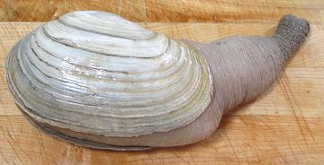
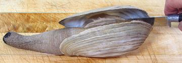
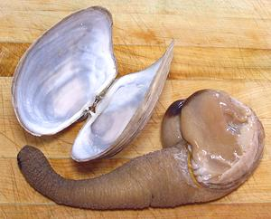
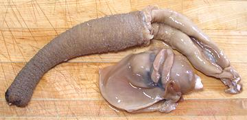
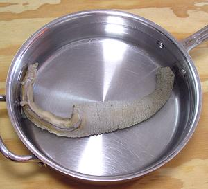
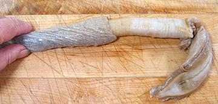
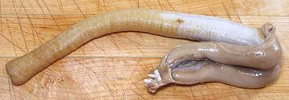
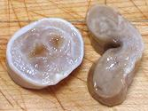

The Geoduck (pronounce "gooy-duk") is the largest burrowing clam in the world. Individuals weighing 15 pounds are recorded and bigger ones rumored, but the photo specimen is a normal market size of 2.2 pounds. The shell was 6 inches long and 3-1/2 inches wide. Total length was 11 inches, but that's meaningless since it could stretch out much longer. They are long lived with a record age of 168 years.
This clam is found only on the West Coast of North America from Washington State north through southern Alaska, and from the tidal zone to 350 feet deep. The name comes from the Nisqually Indian "gwe-duk" ("dig-deep") and the strange spelling is thought to have been a transcription error.
Geoduck harvesting is tightly controlled both in the U.S. and Canada to assure sustainability. Most of the commercial harvest is sent to Japan and China where it fetches a fine price, and that market keeps it expensive here. Some much smaller Panopea species are found off Japan, China and New Zealand. New Zealand has apparently adopted the geoduck name for theirs.
More on Bivalves.
In sushi bars, the siphons are sliced and served raw as "Mirugai" (or "Giant Clam" in North America). The texture is mildly crunchy and the flavor is pleasing and "oceany". The siphons are sliced and cooked in stir fries and in hot pots in China.
In Asia the body section is usually discarded. This makes the price much higher - but in Asia, a very high price is often the most important feature for "100 times enjoyment".
In North America, the body is also used, particularly for chowders. The body flesh is more tender and has a somewhat different flavor but it's certainly not something you want to throw out. On the other hand, some guys in North America have such fragile sexual identity they won't eat Geoduck at all.
Presumably, when you are ready to start preparing it, your duck has been in the fridge for some hours and will be even more sluggish than its usual sluggishness.

This 2.2 pound photo specimen clam was purchased live from an Asian
market in Los Angeles (San Gabriel), California for 2017 US $8.99 per
pound. The fish man wrung out as much water as he could before weighing
it. Edible yield was 5-1/4 ounces (16%) for a cost of $55 per edible
pound - however, I have had Geoducks with a much higher yield, up to
around 40%. This one had a very large amount of visceral material, a
slender siphon, a large shell for its weight, and retained a lot of
water. In general, I expect this specimen represents the minimum yield
you should expect.

Use a small knife and scrape it along the inside of the shell at both
ends to free the duck. There won't be much resistance and the shell
should peel away easily. Actually, you could scrape it off the shell
with your fingers, but at this point the duck will pull its shell as
far closed as it can, so you may not be able to get fingers in there.
The adductor muscles are at the ends of the shell, and they aren't large
or tough, as befits a clam that can't actually close its shell.

You should now have a shell with almost no flesh on it and a clam with
no shell.

Next pull off and discard the "visceral mass", consisting of gills, an
egg shaped stomach and what little awareness a geoduck has. This all
pulls off fairly easily by hand, easiest starting it the end opposite
the siphon. Pull off any loose materials around the body and you're
ready to skin your duck.

In a wide pan, heat sufficient water to completely cover the duck, just
hot enough so you can keep your fingers in it for only a second or two
(150°F/66°C). Dump in the duck and let it sit for 30 to 45
seconds. Pull it out and let it drain.

You should now be able to easily peel the skin off starting
from the part of the body where the open side of the shell was and
and continuing right off the end of the siphon.


You now have a "recipe ready" Geoduck. The right photo shows cross
sections of the siphon and body, both taken from about 1 inch away from
where the siphon and body meet.